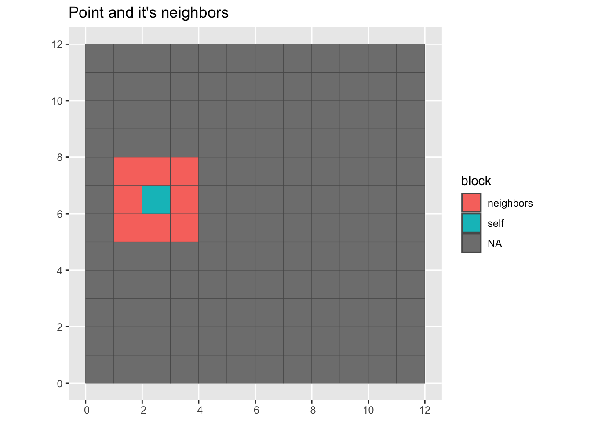
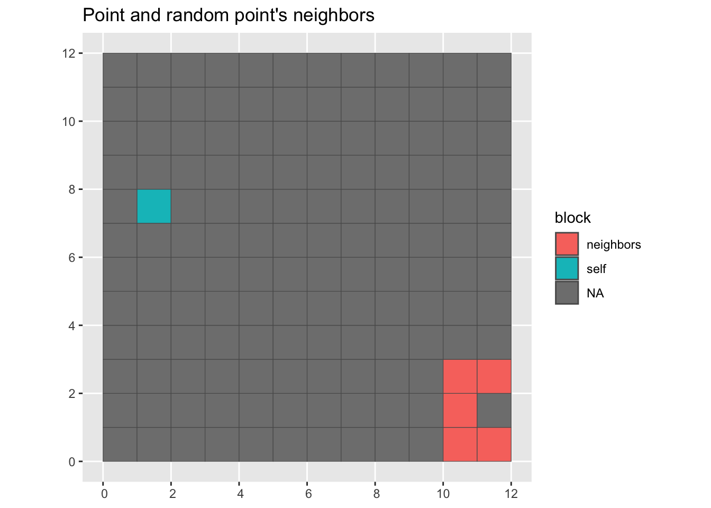
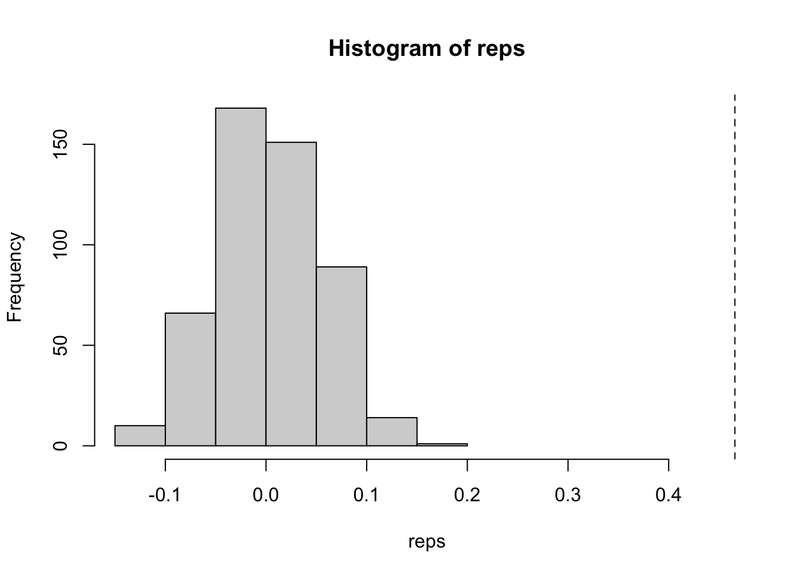

library(sf)
library(sfdep)
library(tidyverse)
grid <- st_make_grid(cellsize = c(1, 1), n = 12, offset = c(0, 0)) |>
as_tibble() |>
st_as_sf() |>
mutate(
id = row_number(),
nb = st_contiguity(geometry),
wt = st_weights(nb)
)Complete spatial randomness
spatial
rstats
sfdep
< this is a cliche about Tobler’s fist law and things being related in space>. Because of Tobler’s first law, spatial data tend to not follow any specific distribution. So, p-values are sort of…not all that accurate most of the time. P-values in spatial statistics often take a “non-parametric” approach instead of an “analytical” one.
Consider the t-test. T-tests make the assumption that data are coming from a normal distribution. Then p-values are derived from the cumulative distribution function. The alternative hypothesis, then, is that the true difference in means is not 0.
In the spatial case, our alternative hypothesis is generally “the observed statistic different than what we would expect under complete spatial randomness?” But what really does that mean? To know, we have to simulate spatial randomness.
There are two approaches to simulating spatial randomness that I’ll go over. One is better than the other. First, I’m going to describe the less good one: bootstrap sampling.
Load the super duper cool packages. We create queen contiguity neighbors and row-standardized weights.
Let’s generate some spatially autocorrelated data. This function is a little slow, but it works.
nb <- grid[["nb"]]
wt <- grid[["wt"]]
x <- geostan::sim_sar(w = wt_as_matrix(nb, wt), rho = 0.78)Bootstrap sampling
Under the bootstrap approach we are sampling from existing spatial configurations. In our case there are 144 existing neighborhoods. For our simulations, we will randomly sample from existing neighborhoods and then recalculate our statistic. It helps us by imposing randomness into our statistic. We can then repeat the process nsim times. There is a limitation, however. It is that there are only n - 1 possible neighborhood configurations per location.
Here we visualize a random point and it’s neighbors.
Plot a point and its neighbors
grid |>
mutate(block = color_block(sample(1:n(), 1), nb)) |>
ggplot(aes(fill = block)) +
geom_sf() +
labs(title = "Point and it's neighbors")
For bootstrap we grab a point and then the neighbors from another point. This function will randomize a nb list object.
color_sample_block <- function(i, nb) {
index <- 1:length(nb)
not_i <- index[-i]
sample_block_focal <- sample(not_i, 1)
res <- rep(NA, length(index))
res[nb[[sample_block_focal]]] <- "neighbors"
res[i] <- "self"
res
}
# visualize it
grid |>
mutate(block = color_sample_block(sample(1:n(), 1), nb)) |>
ggplot(aes(fill = block)) +
geom_sf() +
labs(title = "Point and random point's neighbors")
Often, we will want to create a reference distribution by creating a large number of simulations—typically 999. As the simulations increase in size, we are limited in the amount of samples we can draw. The number of neighborhoods becomes limiting!
Say we want to look at income distribution in Boston and the only data we have is at the census tract level. I happen to know that Boston has 207 tracts. If we want to do 999 simulations, after the 206th simulation, we will likely have gone through all over the neighborhood configurations!
How can we do this sampling? For each observation, we can sample another location, grab their neighbors, and assign them as the observed location’s neighbors.
Bootstrap simulations
In sfdep, we use spdep’s nb object. These are lists that store the row position of the neighbors as integer vectors at each element.
If you want to learn more about neighbors I gave a talk at NY Hackr MeetUp a few months ago that might help.
Here I define a function that samples from the positions (index), then uses that sample to shuffle up the existing neighborhoods and return a shuffled nb object. Note that I add the nb class back to the list.
Let’s compare some observations
nb[1:3][[1]]
[1] 2 13 14
[[2]]
[1] 1 3 13 14 15
[[3]]
[1] 2 4 14 15 16bootstrap_nbs(nb)[1:3][[1]]
[1] 90 91 92 102 104 114 115 116
[[2]]
[1] 29 30 31 41 43 53 54 55
[[3]]
[1] 15 16 17 27 29 39 40 41Here we can see the random pattern. Look’s like there is fair amount of clustering of like values.
grid |>
mutate(x = classInt::classify_intervals(x, 7)) |>
ggplot(aes(fill = x)) +
geom_sf(color = NA, lwd = 0) +
scale_fill_brewer(type = "div", palette = 5, direction = -1) +
theme_void() 
With the weights and the neighbors we can calculate the global Moran. I’ll refer to this as the “observed.” Store it into an object called obs. We’ll need this to calculate a simulated p-value later.
obs <- global_moran(x, nb, wt)
obs[["I"]][1] 0.4657760.47 is a fair amount of positive spatial autocorrelation indicating that like values tend to cluster. But is this due to random chance, or does it depend on where these locations are? Now that we have the observed value of Moran’s I, we can simulate the value under spatial randomness using the bootstrapped sampling. To do so, we bootstrap sample our neighbors, recalculate the weights and then the global Moran. Now, if you’ve read my vignette on conditional permutation, you know what is coming next. We need to create a reference distribution of the global Moran under spatial randomness. To do that, we apply our boot strap nsim times and recalculate the global Moran with each new neighbor list. I love the function replicate() for these purposes.
nsim = 499 Also, a thing I’ve started doing is assigning scalars / constants with an equals sign because they typically end up becoming function arguments.
reps <- replicate(
nsim, {
nb_sim <- bootstrap_nbs(nb)
wt_sim <- st_weights(nb_sim)
global_moran(x, nb_sim, wt_sim)[["I"]]
}
)
hist(reps, xlim = c(min(reps), obs[["I"]]))
abline(v = obs[["I"]], lty = 2)
Bootstrap limitations
That’s all well and good, but let’s look at this a bit more. Since we’re using the bootstrap approach, we’re limited in the number of unique combinations that are possible. Let’s try something. Let’s calculate the spatial lag nsim times and find the number of unique values that we get.
lags <- replicate(
nsim, {
# resample the neighbors list
nb_sim <- bootstrap_nbs(nb)
# recalculate the weights
wt_sim <- st_weights(nb_sim)
# calculate the lag
st_lag(x, nb_sim, wt_sim)
}
)
# cast from matrix to vector
lags_vec <- as.numeric(lags)
# how many are there?
length(lags_vec)[1] 71856[1] 144See this? There are only 144 unique value! That isn’t much! Don’t believe me? Run table(lags_vec). For each location there are only a limited number of combinations that can occur.
Conditional Permutation
Now, here is where I want to introduce what I view to be the superior alternative: conditional permutation. Conditional permutation was described by Luc Anselin in his seminal 1995 paper. The idea is that we hold an observation constant, then we randomly assign neighbors. This is like the bootstrap approach but instead of grabbing a random observation’s neighborhood we create a totally new one. We do this be assigning the neighbors randomly from all possible locations.
Let’s look at how we can program this. For each location we need to sample from an index that excludes the observation’s position. Further we need to ensure that there are the same number of neighbors in each location (cardinality).
permute_nb <- function(nb) {
# first get the cardinality
cards <- st_cardinalties(nb)
# instantiate empty list to fill
nb_perm <- vector(mode = "list", length = length(nb))
# instantiate an index
index <- seq_along(nb)
# iterate through and full nb_perm
for (i in index) {
# remove i from the index, then sample and assign
nb_perm[[i]] <- sample(index[-i], cards[i])
}
structure(nb_perm, class = "nb")
}
nb[1:3][[1]]
[1] 2 13 14
[[2]]
[1] 1 3 13 14 15
[[3]]
[1] 2 4 14 15 16permute_nb(nb)[1:3][[1]]
[1] 83 98 120
[[2]]
[1] 124 54 111 69 93
[[3]]
[1] 49 108 28 4 18Now, let’s repeat the same exercise using conditional permutation.
lags2 <- replicate(
nsim, {
nb_perm <- permute_nb(nb)
st_lag(x, nb_perm, st_weights(nb_perm))
}
)
lags2_vec <- as.numeric(lags2)
length(unique(lags2_vec))[1] 71855There are farrrrr more unique values. In fact, there is a unique value for each simulation - location pair. If we look at the histograms, the difference is even more stark. The conditional permutation approach actually begins to represent a real distribution.
So, this is all for me to say that bootstrapping isn’t it for creating simulated distributions for which to calculate your p-values.